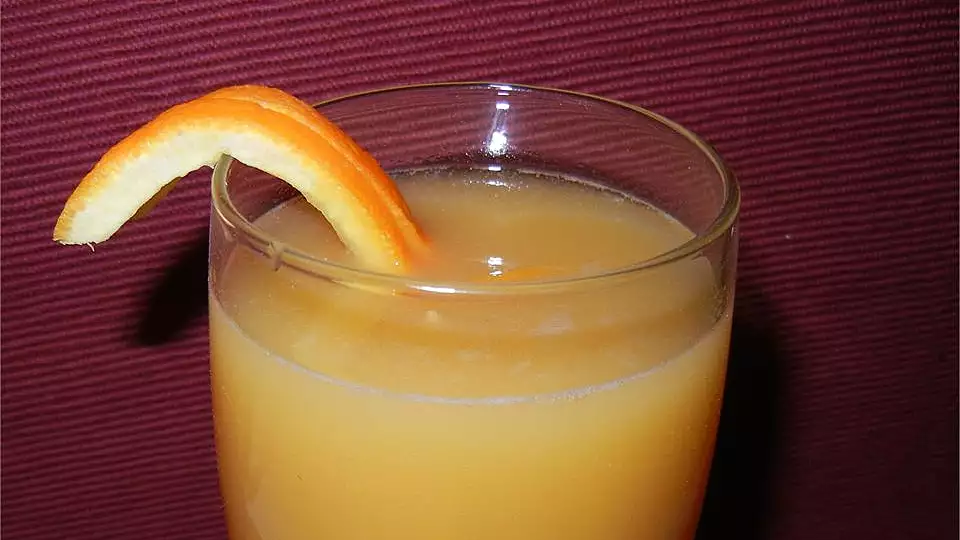

Triple Fruit Drink

Description
It's a recipe for a fruit drink found on the internet!
Ingredients
- 1 (12 ounce) can apricot nectar, chilled
- 1 ½ cups orange juice, chilled
- 2 tablespoons lemon juice
Steps
- In a pitcher, combine apricot nectar, orange juice, and lemon juice. Serve chilled.